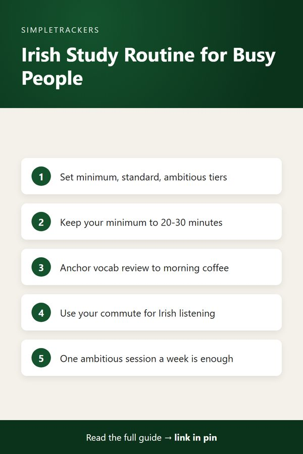

Building a Daily Study Routine: Irish for Busy Learners
← Back to the Complete Irish Gaelic Study Guide

Key takeaways
- Drop the perfect schedule: ambitious weekly plans collapse by Wednesday. Build a routine around habits, not willpower.
- Use three tiers: a non-negotiable minimum (20-30 minutes), a realistic standard day and an occasional ambitious session.
- Anchor each habit: tie vocabulary to your morning coffee and listening to your commute or exercise.
- Track against real commitments: four minimum days a week counts as success, and the log shows you what to adjust.
The Myth of the Perfect Study Schedule
Most Irish learners begin with unrealistic expectations. Monday morning comes with plans to study two hours daily, engage in conversation practice, complete grammar exercises and listen to podcasts.
By Wednesday, life intervenes: work deadlines, family obligations, unexpected commitments. The whole schedule crumbles. The learner feels defeated and either quits or starts over the following Monday with the same impossible plan.
The real problem
It isn't motivation or capacity. Perfect schedules simply don't survive contact with reality. What works instead is a sustainable routine built around habits, not willpower.
Three Tiers: Minimum, Standard, and Ambitious
Start by defining three versions of your daily routine. This simple framework removes decision-making from each day and prevents the all-or-nothing collapse.
| Tier | When you use it | What it might include |
|---|---|---|
| Minimum (non-negotiable) | Even on your worst day; no more than 20-30 minutes | Fifteen minutes of vocabulary review and a single listening session |
| Standard (your actual goal) | A normal day with an hour or so available | Vocabulary review, thirty minutes of listening or reading, and a brief grammar exercise |
| Ambitious (weekend or high-energy days) | Occasionally, not daily | Speaking practice, conversation with a language exchange partner, or deeper grammar exploration |
- Minimum. The point is consistency, not volume. If you do your minimum five days a week, you're ahead of most learners.
- Standard. This is realistic and sustainable.
- Ambitious. You can't maintain this daily, but you don't need to. One ambitious session per week drives disproportionate progress.
The Habits Within the Routine
A sustainable routine is built on habits, not motivation. Each habit should be tied to an existing anchor in your day: something you already do consistently.
Anchor vocabulary to your morning coffee
While your coffee brews, review ten new Irish words using flashcards or a simple list. This takes three minutes and requires zero willpower. It's as automatic as pouring the coffee itself.
The habit stack
Coffee brewing → Irish vocabulary. After two weeks, your brain will expect the vocabulary work as part of the coffee ritual.
Anchor listening to your commute or exercise
If you already spend thirty minutes running or riding the bus, that time becomes your listening window. An Irish language podcast, a Gaeilge audiobook chapter, or a playlist of songs fills the slot.
The effort required is purely logistical (downloading the content). The habit itself carries no friction.

Sample Sustainable Routines
Pick the pattern closest to your week and adapt it.
| Learner | Sample routine |
|---|---|
| 30 minutes a day | Morning vocabulary review (5 min) + listening during commute (15 min) + grammar or reading after dinner (10 min) |
| An hour a day | Morning vocabulary and grammar (20 min) + lunch-break listening or reading (25 min) + evening speaking practice or conversation (15 min) |
| Sporadic (busy season, young children, unpredictable schedule) | Your minimum routine four days a week; the rest is bonus |
- The 30-minute routine requires no rearrangement of your life. It slots into existing time.
- The speaking component of the hour-a-day routine can be reading aloud, language exchange apps, or voice message exchange with a friend.
- For the sporadic learner, four focused days beats seven days of guilt and zero progress.
Tracking Creates Accountability Without Pressure
Once you've defined your tiers, tracking your actual practice becomes powerful. You're not tracking against some imaginary ideal; you're tracking against your realistic commitments.
If you commit to a minimum routine and consistently log thirty minutes four days a week, you've succeeded. If you also hit your standard routine two other days, you've exceeded your goal.
The Irish Gaelic Self-Study Progress Tracker makes it easy to log these sessions and see patterns emerge. Questions your log can answer:
- Did you spend more time on listening than speaking?
- Did you maintain your routine last week?
- Which days are most sustainable for your study?
These patterns guide your next iteration.
Adjust by Season
Your routine should not be static. The key is having defined options rather than swinging between perfectionistic plans and complete abandonment.
- Busy seasons (work projects, family events, school terms): your standard routine might drop to your minimum routine, and that's fine.
- Calmer periods: add the ambitious sessions.
A sustainable routine isn't about reaching some mythical peak of productivity. It's about finding the rhythm of study that fits your actual life, then tracking it consistently so you can see your real progress accumulate. That's how language learning actually happens.
Start building your three-tier routine today, anchor each tier to existing habits, and use the Irish Gaelic Self-Study Progress Tracker at https://kimnet8.gumroad.com/l/kanmzp to log your consistency. Within two months, you'll have built a study practice that actually survives your real life.